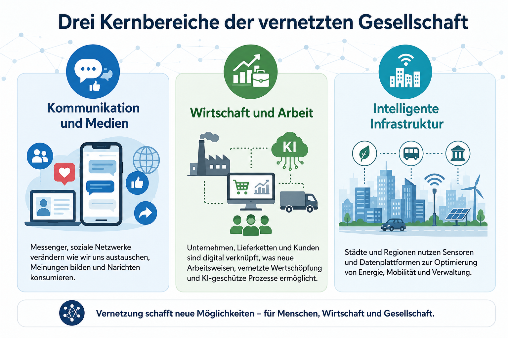

Crawling
Automatisierte Programme folgen Links und entdecken öffentlich erreichbare Webseiten.
Orientierung in der digitalen Welt
Informationen sind schnell verfügbar, aber nicht automatisch richtig. Medienkompetenz bedeutet, Suchergebnisse einzuordnen, Quellen zu prüfen und digitale Plattformen verantwortungsvoll zu nutzen.
01 · Infrastruktur
Das Internet ist ein weltweites Verbundnetz aus vielen einzelnen Netzen. Daten werden in Pakete zerlegt und über Router, Glasfaserleitungen, Mobilfunk, Funkstrecken und Rechenzentren zum Ziel transportiert.
Das World Wide Web ist ein Dienst im Internet. Weitere Dienste sind E-Mail, Messenger, Videotelefonie, Cloud-Speicher oder Online-Spiele.
02 · Informationssuche
Automatisierte Programme folgen Links und entdecken öffentlich erreichbare Webseiten.
Inhalte werden analysiert, strukturiert und in einem Suchindex gespeichert.
Bei einer Anfrage sortieren Algorithmen Ergebnisse unter anderem nach Relevanz, Qualität, Aktualität, Standort und Sprache.
Organische Treffer, Werbung, Karten, Bilder und KI-Zusammenfassungen können gemeinsam erscheinen.
03 · Quellenkritik
Ist eine verantwortliche Person oder Organisation genannt? Welche Fachkenntnis ist erkennbar?
Werden Originalquellen, Studien, Daten oder nachvollziehbare Dokumente verlinkt?
Wann wurde der Inhalt veröffentlicht oder aktualisiert? Ist Aktualität für das Thema wichtig?
Ist die Sprache sachlich und differenziert oder stark emotional, abwertend und alarmistisch?
Handelt es sich um Werbung, politische Kommunikation, Verkauf oder unabhängige Information?
Stimmt die Domain? Gibt es Impressum, Kontakt und eine transparente redaktionelle Verantwortung?
Auch eine betrügerische Website kann ein gültiges HTTPS-Zertifikat besitzen. Inhalt, Domain und Verantwortliche müssen trotzdem geprüft werden.
04 · Desinformation
Starke Emotionen sind ein Signal, nicht sofort zu teilen. Erst prüfen, dann reagieren.
Ist nur ein Screenshot vorhanden, suche nach dem vollständigen Beitrag oder der zugrunde liegenden Studie.
Mehrere Seiten, die voneinander abschreiben, sind nicht automatisch mehrere Belege.
Alte oder aus dem Zusammenhang gerissene Fotos werden häufig für neue Behauptungen verwendet.
Bei unklarer Faktenlage ist „noch nicht bestätigt“ besser als eine scheinbar sichere Aussage.
Fehlinformation ist falsch, ohne dass zwingend eine Täuschungsabsicht vorliegt. Desinformation wird gezielt verbreitet, um Menschen zu manipulieren oder zu schädigen.
05 · Künstliche Intelligenz
KI-Systeme können Informationen bündeln und verständlich erklären. Sie können jedoch Quellen verwechseln, veraltete Inhalte übernehmen oder plausible, aber falsche Aussagen erzeugen.
06 · Soziale Plattformen
| Chancen | Risiken | Gute Praxis |
|---|---|---|
| Austausch und Gemeinschaft | Cybermobbing und Gruppendruck | Melden, blockieren, Beweise sichern, Hilfe holen |
| Information und gesellschaftliche Teilhabe | Desinformation und Echokammern | Quellen vergleichen und bewusst unterschiedliche Perspektiven lesen |
| Kreativität und Selbstdarstellung | Dauerhafte Datenspuren | Privatsphäre-Einstellungen prüfen und sparsam veröffentlichen |
| Vernetzung für Schule und Beruf | Profilbildung und personalisierte Werbung | Berechtigungen, Tracking und Werbeeinstellungen kontrollieren |
07 · Digitale Transformation

Messenger und Plattformen verändern Austausch, Nachrichtenkonsum und öffentliche Meinungsbildung.
Digitale Lieferketten, Plattformökonomie, Automatisierung und KI verändern Prozesse und Berufsbilder.
Sensoren und Datenplattformen können Energie, Verkehr und Verwaltung effizienter steuern, benötigen aber klare Sicherheits- und Datenschutzregeln.
Quellen & Vertiefung